Generative Adversarial Networks
Generative Model
- A generative model learns the structure of a set of input data, and can be used to generate new data
- Examples:
- RNN for text generation
- Autoencoder
- VAE
Blurriness of Autoencoder Images
- Blurry images, blurry backgrounds
- Why? Because the loss function used to train an autoencoder is the mean square error loss (MSELoss)
- To minimize the MSE loss, autoencoders predict the “average” pixel
Can we use a better loss function?
Generative Adversarial Network
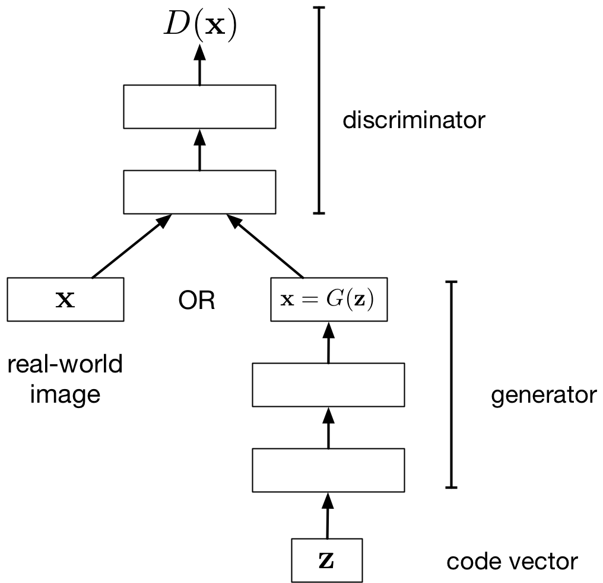
- Generator network: try to fool the discriminator by generating real-looking images
- Discriminator network: try to distinguish between real and fake images
The loss function of the generator (the model we care about) is defined by the discriminator!
GAN Generator
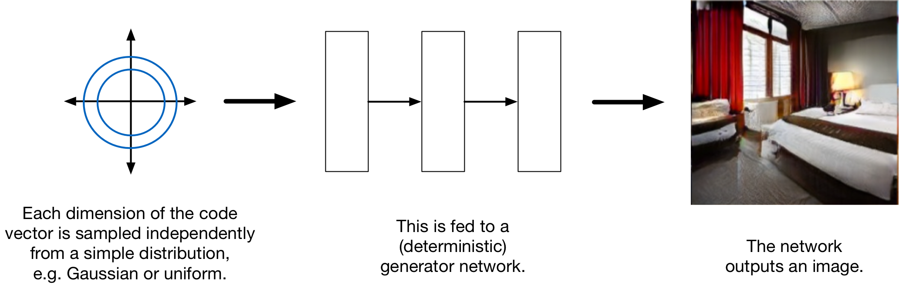
- Generator Input: a random noise vector (Q: Why do we need to input noise?)
- Generator Output: a generated image
GAN Architecture
- Discriminator Input: an image
- Discriminator Output: a binary label (real vs fake)
GAN Loss Function Notation
Discriminator:
- \(D\) – the discriminator neural network
- \(\theta\) – the trainable parameters of the discriminator (we’ll write \(D_\theta\) if we want to make the dependency clear)
- \(x\) – an image (either real or fake)
- \(D(x)\) or \(D_\theta(x)\) – the discriminator’s determination of whether the image is real (1 = real, 0 = fake)
GAN Loss Function Notation II
Generator:
- \(G\) – the generator neural netowrk
- \(\phi\) – the trainable parameters of the generator (we’ll write \(G_\phi\) if we want to make the dependency clear)
- \(z\) – a random noise vector
- \(G(z)\) or \(G_\phi(z)\) – a generated image
Q: What does \(D(G(z))\) mean?
GAN: Optimizing the Generator
Let’s assume the discriminator is fixed. Tune generator weights to:
- maximize the probability that…
- discriminator labels a generated image as real
- Q: What loss function should we use?
We wish to tune \(\phi\) to increase \(D_\theta(G_\phi(z))\)
\[
\min_\phi \left(\mathbb{E}_{z \sim \mathcal{N}(0,I)}\left[\log \left(1 - D_\theta(G_\phi(z)) \right) \right]\right)
\]
GAN: Optimizing the Discriminator
Let’s assume the generator is fixed. Tune discriminator weights to:
- maximize the probability that the
- discriminator labels a real image as real
- discriminator labels a generated image as fake
- Q: What loss function should we use?
GAN: Optimizing the Discriminator II
We wish to tune \(\theta\) to:
- decrease \(D_\theta(G_\phi(z))\), where \(z \sim \mathcal{N}(0, I)\) (the data distribution)
- increase \(D_\theta(x)\), where \(x \sim \mathcal{D}\) (the data distribution)
\[
\max_\theta \mathbb{E}_{x \sim \mathcal{D}}\left[\log D_\theta(x)\right] + \mathbb{E}_{z}\left[\log \left( 1 - D_\theta(G_\phi(z)) \right) \right]
\]
GAN Optimization Problem
If we optimize both the generator and the discriminator then:
\[
\min_\phi \left(\max_\theta \left(\mathbb{E}_{x \sim \mathcal{D}}\left[\log D_\theta(x)\right] + \mathbb{E}_{z}\left[\log \left( 1 - D_\theta(G_\phi(z)) \right) \right]\right)\right)
\]
This is called the minimax optimization problem since the generator and discriminator are playing a zero-sum game against each other
Training
Alternate between:
- Training the discriminator
Updating the Discriminator
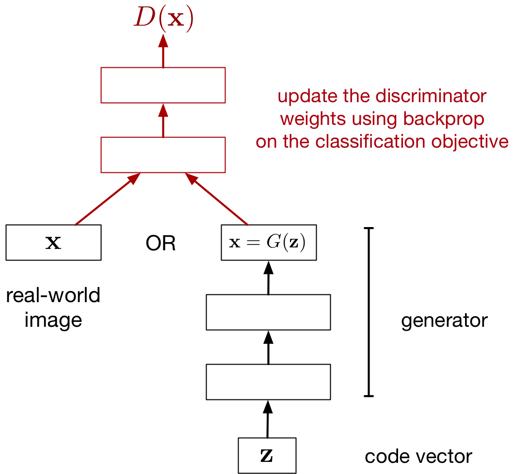
Updating the Generator
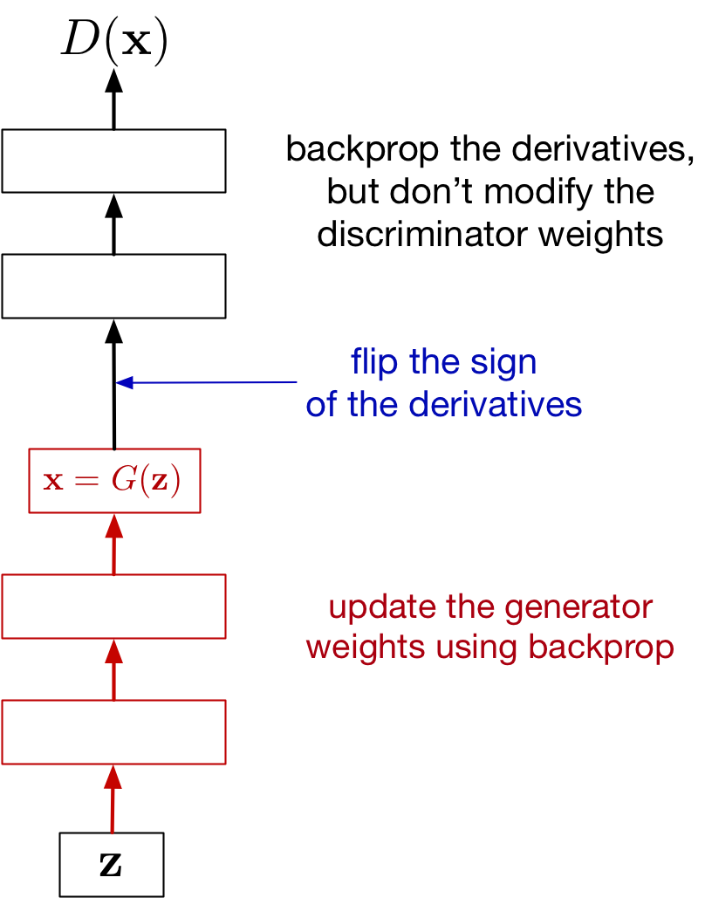
GAN Alternating Training Visualized
Black dots is the data distribution \(\mathcal{D}\), green line is the generator distribution \(G(z)\), and blue dotted line is the discriminator:
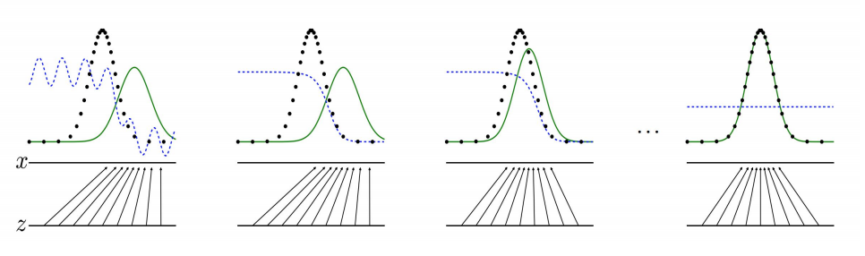
GAN Alternating Training Visualized
- The distributions \(G(z)\) and \(\mathcal{D}\) are quite different
- The discriminator is updated to be able to better distinguish real vs fake
- The generator is updated to be better match \(\mathcal{D}\)
- If training is successful, \(G(z)\) is indistinguisable from \(\mathcal{D}\)
GAN Training Caveats
- Can work very well and produces crisp, high-res images, but difficult to train!
- Difficult to numerically see whether there is progress
- Plotting the “training curve” (discriminator/generator loss) doesn’t help much
- Takes a long time to train (a long time before we see progress)
GAN: Interpolation in \(z\)
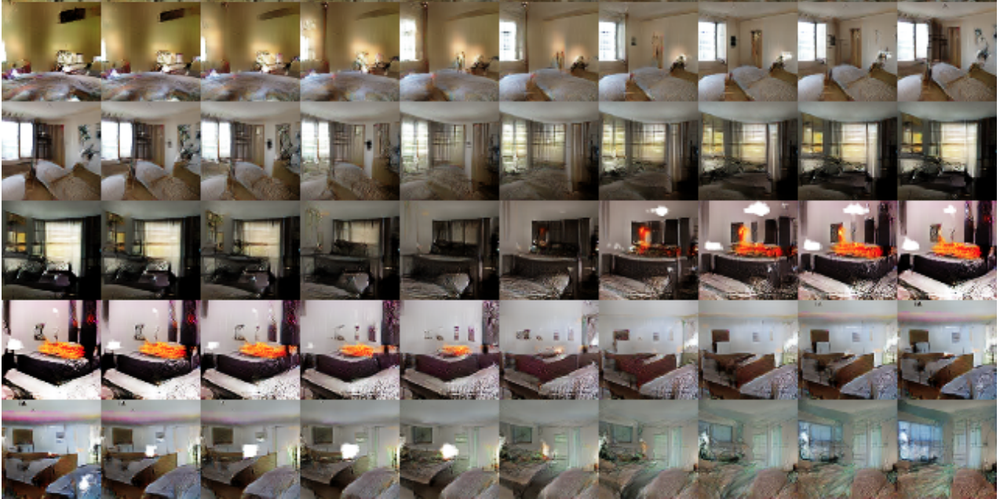
Radford et al. (2016) https://arxiv.org/pdf/1511.06434.pdf
GAN: Vector Arithmetic in \(z\)
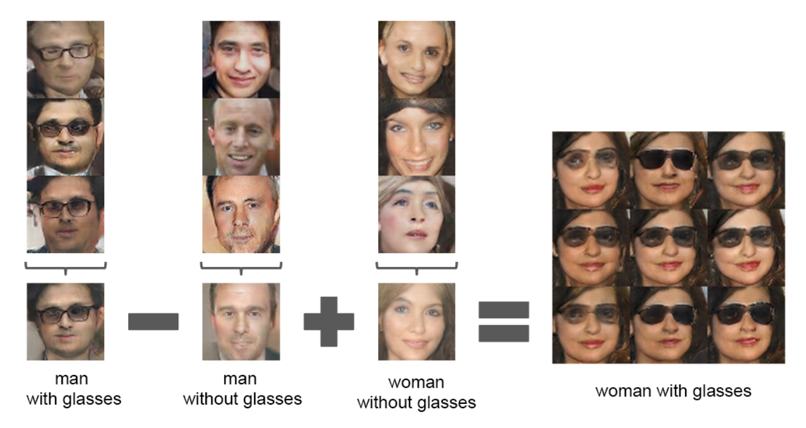
Radford et al. (2016) https://arxiv.org/pdf/1511.06434.pdf
GAN Samples (2019)
ImageNet object categories (by BigGAN, a much larger model, with a bunch more engineering tricks)
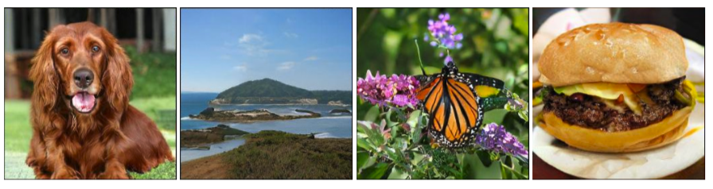
Brock et al., 2019. Large scale GAN training for high fidelity natural image synthesis
Mode Collapse
We don’t actually know how well a GAN is modelling the distribution. One prominent issue is mode collapse
- The word “mode” here means “peak” or ” high-value local optimum”
- GAN model learns to generate one type of input data (e.g. only digit 1)
- Generating anything else leads to detection by discriminator
- Generator gets stuck in that local optima
Balance between Generator and Discriminator
If the discriminator is too good, then the generator will not learn due to saturation:
- Remember that we are using the discriminator like a “loss function” for the generator
- If the discriminator is too good, small changes in the generator weights won’t change the discriminator output
- If small changes in generator weights make no difference, then we can’t incrementally improve the generator
Wasserstein GAN (WGAN)
Idea: Use a different loss function.
Arjovsky et al. (2017) Wasserstein GAN. https://arxiv.org/abs/1701.07875
- Use the Wasserstein distance between the generator distribution and the data distribution
- Reduces mode collapse, better measurement of progress
Style Transfer with Cycle GAN
Style transfer problem: change the style of an image while preserving the content.
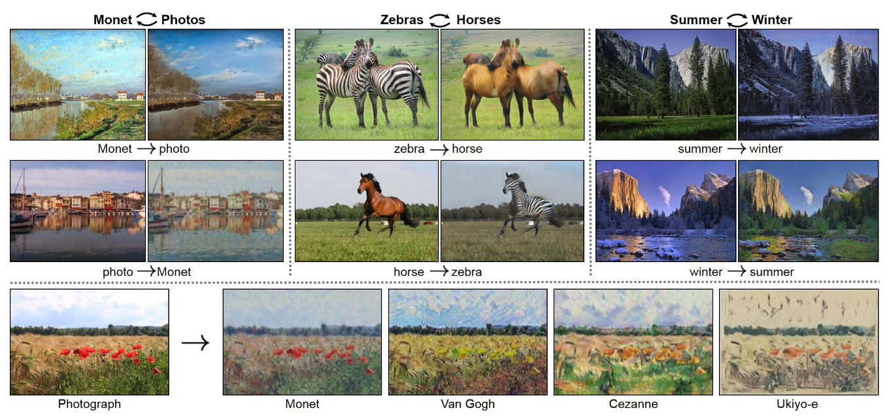
Data: Two unrelated collections of images, one for each style
Cycle GAN Idea
- If we had paired data (same content in both styles), this would be a supervised learning problem. But this is hard to find.
Cycle GAN Idea
- The CycleGAN architecture learns to do it from unpaired data.
- Train two different generator nets to go from style 1 to style 2, and vice versa.
- Make sure the generated samples of style 2 are indistinguishable from real images by a discriminator net.
- Make sure the generators are cycle-consistent: mapping from style 1 to style 2 and back again should give you almost the original image.
Cycle GAN Architecture
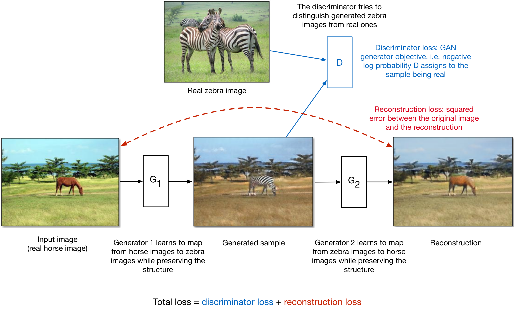
Cycle GAN: Aerial photos and maps
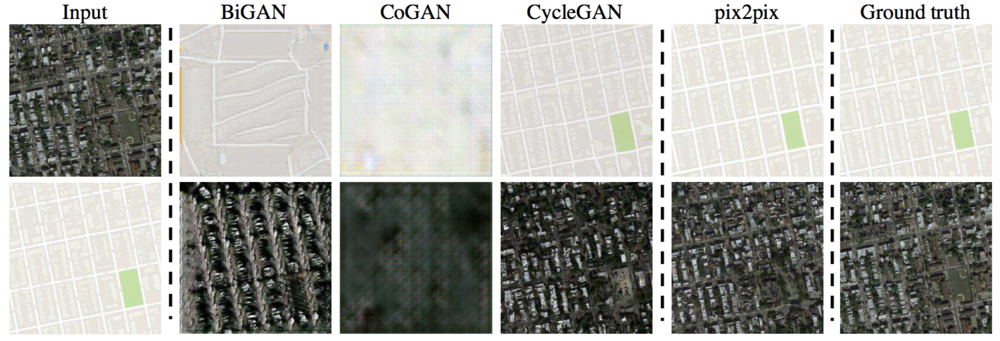
Cycle GAN: Road scenes and semantic segmentation
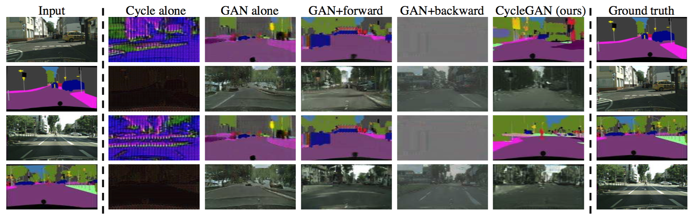
Deepfakes for voice